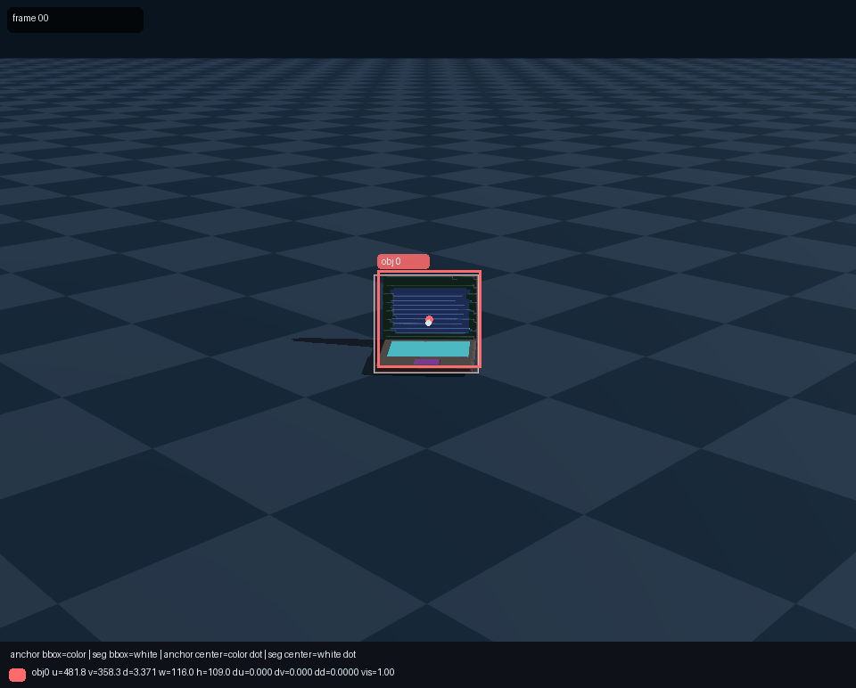
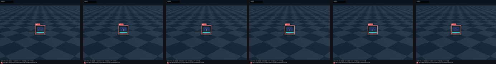
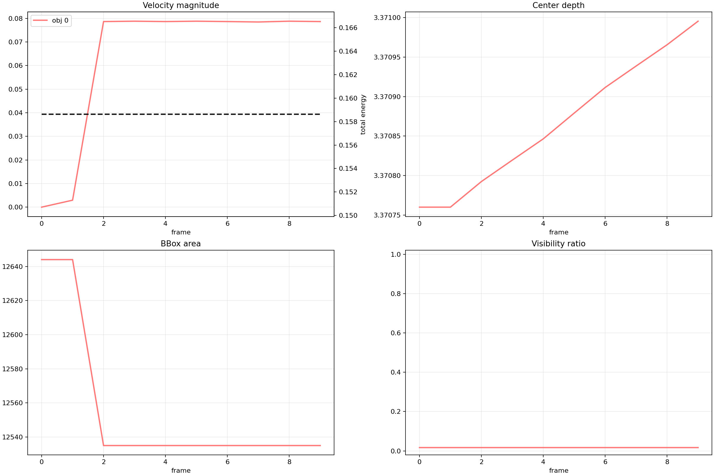
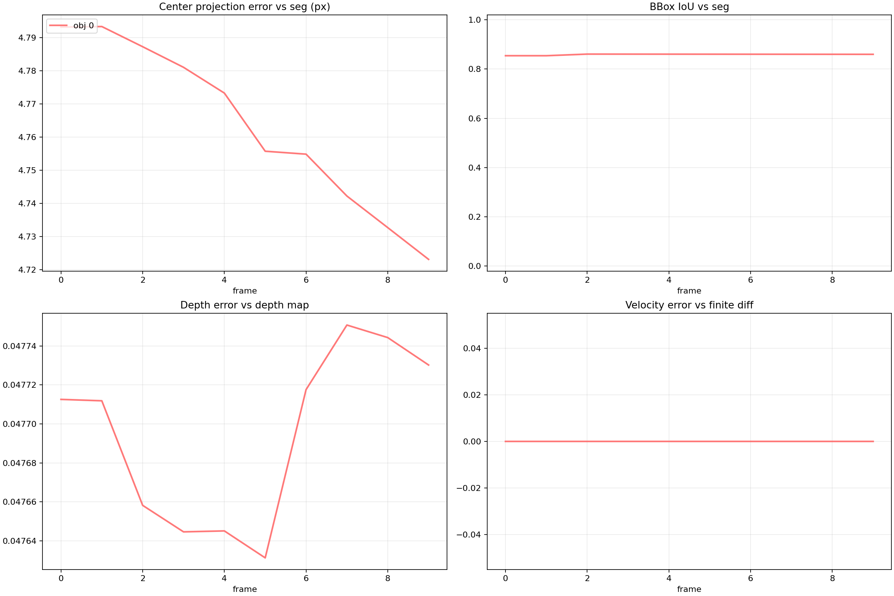

representative sample
Window sample: /data/gaoya/AAA_test_video/Dataset_physV/0417data/version_1_genesis_rigid_data_all_cases/stage1adapter/test/genesis/genesis_heldout_0139__10005__case000_static_center
Source sample: /data/gaoya/AAA_test_video/Dataset_physV/0417data/version_1_genesis_rigid_data_all_cases/train/rigid/single_object_preview/count_01/10005__case000_static_center
Caption: the laptop is placed near the center.
Detail Caption: Scene 10005__case000_static_center: a single rigid object scene with 1 rigid object(s). The scene composition is single_object_preview, the interaction pattern is single_object_static_preview, and the global motion category is static_center. Objects: object_id=0, seg_id=1: a Laptop (Electronics, source=PhysXNet, source_id=10005) with role=target; it starts near the center with no prescribed object velocity. Role summary: target=Laptop. The RGB video has 16 frames at resolution [960, 720]; gravity is [0.0, 0.0, -9.81].




| metric | mean | median | p95 |
|---|---|---|---|
| center_projection_error_px | 4.763689 | 4.764521 | 4.793287 |
| projection_consistency_ref_px | 0.000000 | 0.000000 | 0.000000 |
| bbox_iou | 0.859135 | 0.860216 | 0.860732 |
| depth_consistency_abs | 0.047695 | 0.047712 | 0.047748 |
| depth_consistency_rel | 0.014352 | 0.014358 | 0.014368 |
| state_abs_error | 0.109231 | 0.000000 | 0.983068 |
| velocity_diff_error | 0.000000 | 0.000000 | 0.000000 |
| vis_abs_error | 0.000000 | 0.000000 | 0.000000 |
| velocity_smoothness | 0.000024 | n/a | n/a |
| anomaly | True | large_center_projection_error | |